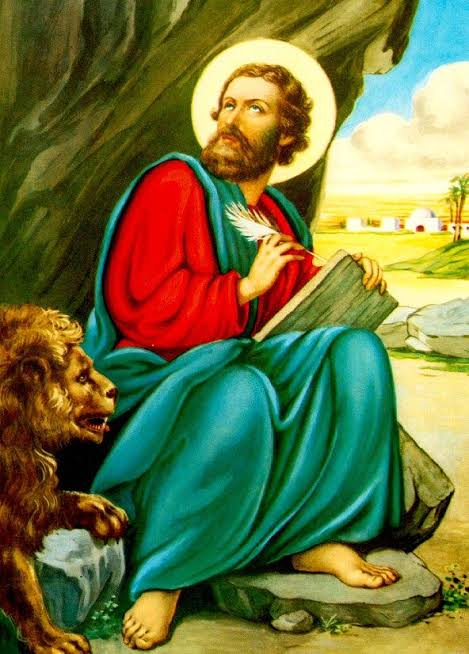

تاريخ الاباء البطاركة
1- البابا الاول كاروز الديار المصرية ما ر مرقس

باقي الاباء
مار مرقس
انيانوس
ميليوس
كردونس
ابريموس
يسطس
البابا أومانيوس
البابا مرقيانوس
البابا كلاديانوس
اغريبينوس
يوليانوس
ديمتريوس
ياروكلاس
ديونسيوس
مكسيموس
ثاؤنا
بطرس الاول
ارشلاوس
الكساندروس
البابا اثناسيوس
البابا بطرس الثاني
البابا تيموثاوس
البابا ثاؤفيلس
البابا كيرلس الاول
البابا ديسقوروس الاول
البابا تيموثاوث الثاني
البابا بطرس الثالث
البابا اثناسيوس الثاني
البابا يوحنا الاول
البابا يوحنا الثاني
البابا ديسقوروس الثاني
البابا تيموثاوس الثالث
البابا ثاؤذوسيوس
البابا بطرس الرابع
البابا دميان
البابا اناسطاسيوس
البابا اندرونيقوس
البابا بينيامين
البابا اغاثون
البابا يوحنا الثالث
البابا اسحاق
البابا سيمون الاول
البابا الكسندروس الثاني
البابا قزمان الاول
البابا ثيؤدوروس الاول
الباب خاءيل الاول
البابا مينا الاول
البابا يوحنا الرابع
البابا مرقس الثاني
البابا يعقوب
البابا سيمون الثاني
البابا يوساب الاول
البابا خاءيل الثاني
البابا قزمان الثاني/a>
البابا شنودة الاول
البابا ميخاءيل الاول
البابا غابريال الاول
البابا قزمان الثالث
البابا مكاريوس الاول
البابا ثاؤفانوس
البابا مينا الثاني
البابا ابرام
البابا فيلوثيؤس
البابا زخارياس
البابا شنودة الثاني
البابا خرستوذولس
البابا كيرلس الثاني
البابا ميخاءيل الثاني
البابا مكاريوس الثاني/a>
البابا غابريال الثاني
الباب ميخاءيل الثالث
الباب يوحنا الخامس
البابا مرقس الثالث
البابا يوحنا السادس
البابا كيرلس الثالث
البابا اثناسيوس الثالث
البابا غابريال الثالث
البابا يوحنا السابع
البابا ثاؤذوسيوس الثاني
البابا يوحنا الثامن
البابا يوحنا التاسع
البابا بنيامين الثاني
البابا بطرس الخامس
البابا مرقس الرابع
البابا يوحنا العاشر
البابا غابريال الرابع
البابا متاؤس الاول
البابا غابريال الخامس
البابا يوحنا الحادي عشر
البابا متاؤس الثاني
البابا غابريال السادس
البابا ميخاءيل الرابع
البابا يوحنا الثاني عشر
البابا يوحنا الثالث عشر
البابا غابريال السابع
البابا يوحنا الرابع عشر
البابا غابريال الثامن
البابا مرقس الخامس
البابا يوحنا الخامس عشر
البابا متاؤس الثالث
البابا مرقس السادس
البابا متاؤس الرابع
البابا يوحنا السادس عشر
البابا بطرس السادس
البابا يوحنا السابع عشر
البابا مرقس الثامن
البابا يوحنا الثامن عشر
البابا مرقس التاسع
البابا بطرس السابع
البابا كيرلس الرابع
البابا ديمتريوس الثاني
البابا كيرلس الخامس
البابا يوحنا الثامن عشر
البابا مكاريوس الثالث
البابا يوساب الثاني
البابا كيرلس السادس
البابا شنودة الثالث
البابا تواضروس الثاني
اغلاق
118 -البابا تواضروس الثاني البابا الحالي
© copyright youssef bassem